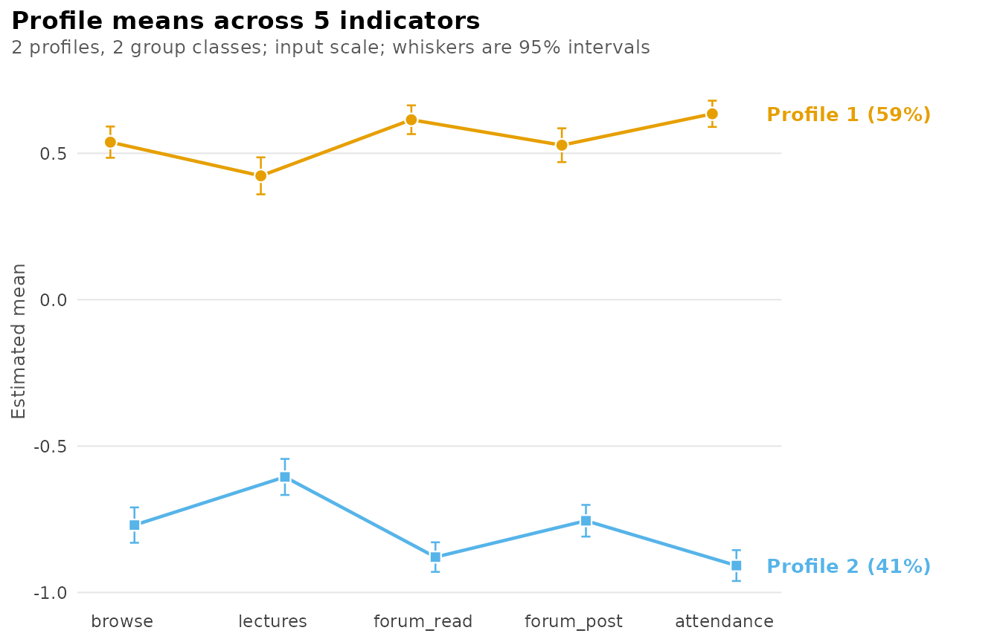
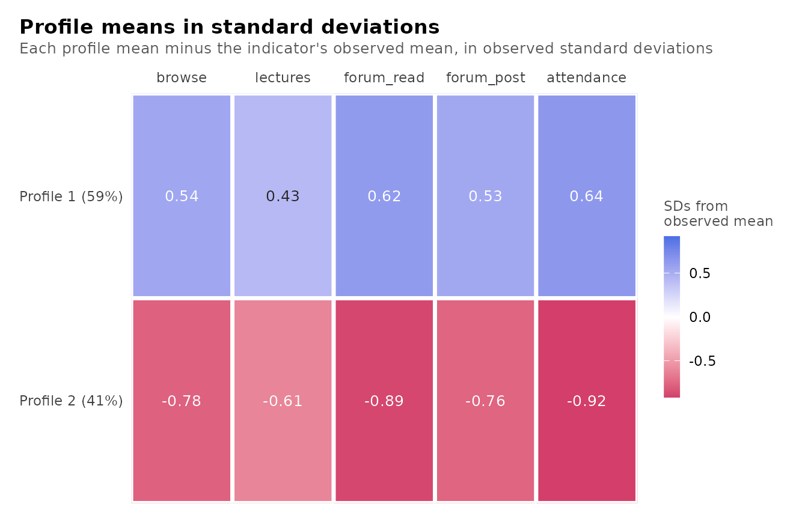
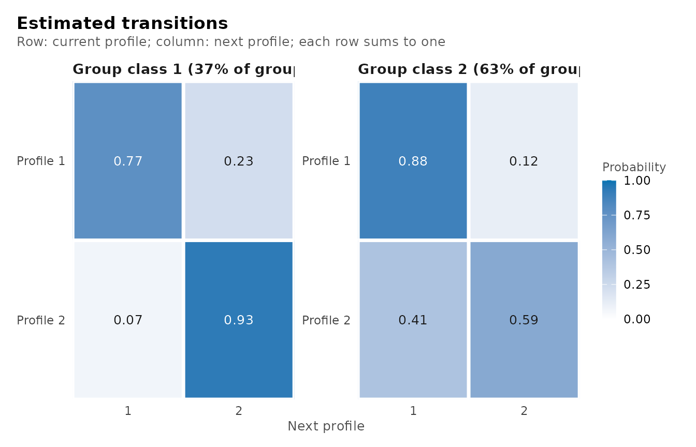
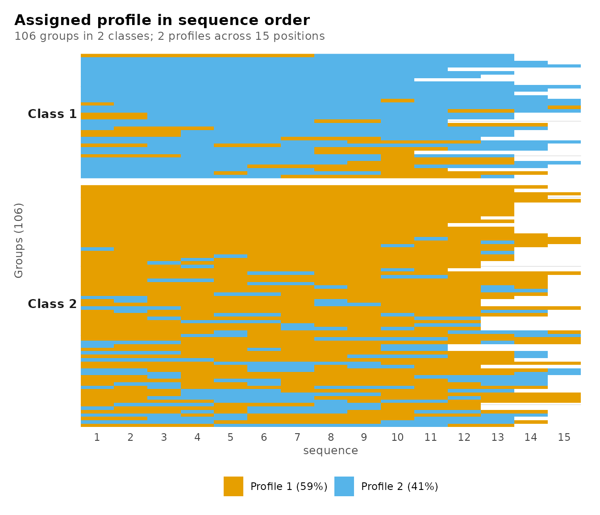
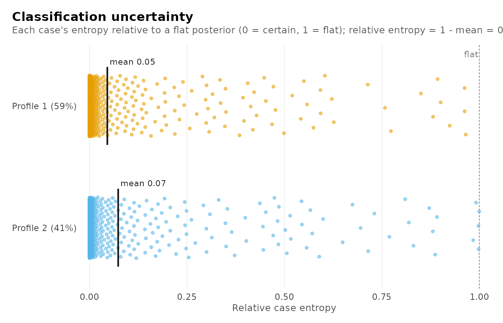
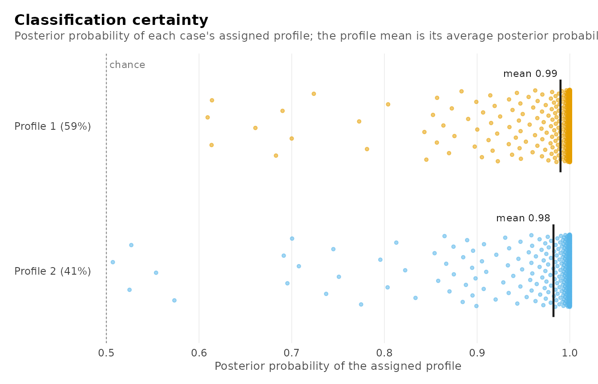
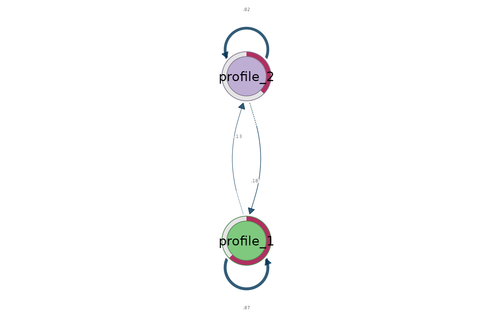
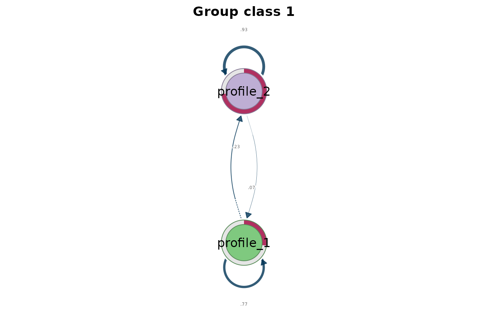
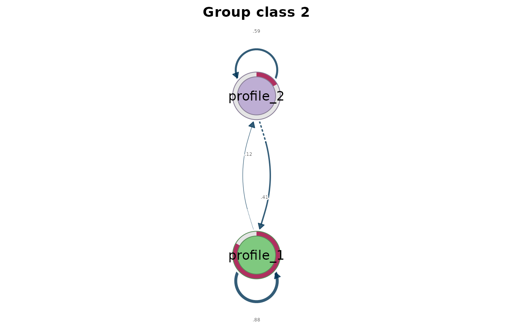

Latent transition analysis with the latents R package
Mohammed Saqr
University of Eastern FinlandSonsoles López-Pernas
University of Eastern FinlandSource:
vignettes/articles/lta.Rmd
lta.RmdLatent transition analysis (LTA) models change in latent states over repeated occasions (Collins & Lanza, 2010). At every occasion, each unit belongs to one of a small number of unobserved states, defined, as in latent class or profile analysis, by their distributions on the observed indicators. Change is the movement of units between these states from one occasion to the next. LTA estimates the states, how units are distributed over them at the start, and how likely each move is.
What latent transition analysis is
States are latent. The indicators measure the state of a unit at an occasion with error. Classifying each occasion separately, for instance with one latent profile analysis per occasion, and cross-tabulating the assignments treats every misclassification as a change of state and overstates instability. LTA estimates the states and the transitions in one model, so the transition probabilities are corrected for classification error under the model’s assumptions (Collins & Lanza, 2010).
The model has three parts. With the state of unit at occasion and its indicators,
- the measurement model defines each state: means and variances for continuous indicators, response probabilities for categorical ones;
- the initial probabilities give the distribution of the states at the first occasion;
- the transition probabilities give the probability of moving from state to state ; each row of the transition matrix sums to one, the diagonal holds the probabilities of staying, and the off-diagonal cells the direction of change.
Default assumptions make the transitions interpretable. The measurement model is the same at every occasion (measurement invariance), so a state means the same thing throughout and a transition is a change of state rather than a change of the states’ definitions. The next state depends only on the current one (the first-order Markov property), and the transition probabilities are the same at every move (homogeneity). Each of these can be relaxed, as the last section shows.
LTA is a hidden Markov model. The states form a
Markov chain that is not observed directly; only the indicators are. In
the terminology of hidden Markov models (Rabiner, 1989), the measurement
model gives the emission distributions. lta() estimates the
model by maximum likelihood with the EM algorithm, computing the
posterior probabilities of the states with the forward-backward
recursions.
Group classes add heterogeneity in change. A single transition matrix assumes that all units change in the same way. With latent group classes, each class has its own initial and transition probabilities over the same states, a mixed Markov model (van de Pol & Langeheine, 1990). The classes are types of dynamics: for example, units that leave an unfavourable state quickly and units that remain in it. The mover-stayer model (Goodman, 1961) is the special case with one class of units that never change state.
The output describes change: the prevalence of each state over time, the stability of each state (the diagonal of the transition matrix), the most likely moves out of each state, the differences in dynamics between group classes and, with covariates, the predictors of the initial state and of each transition.
Data
course_engagement is simulated and has one row per
course enrolment: 1,422 enrolments from 106 students. The simulation is
calibrated to the engagement data of students followed through a full
study programme (Saqr & López-Pernas, 2021; Saqr et al., 2023): its
scales, spread, correlations and the persistence of engagement across
courses follow those data, while no value of the source is retained.
lta() needs three kinds of variables.
-
Group:
studentidentifies whose occasions belong together. -
Occasion order:
sequenceis the position of each course in the student’s history. Students can have different numbers of occasions (10 to 15 here). -
Indicators: five activity measures
(
browse,lectures,forum_read,forum_post,attendance), each standardized within course, so 0 is the course average.
The data were generated from two engagement profiles and two kinds of
students, committed and wavering, whose stationary probabilities of an
engaged enrolment are about 0.8 and 0.25; engagement changes along each
student’s sequence (?course_engagement).
attendance is generated from the four click measures, so
the indicators are correlated within profiles.
Numbers of profiles and group classes
enumerate_classes() with time compares
transition models. Because attendance depends on the other indicators,
the candidates estimate full within-profile covariances
(covariance_model = "full"); with a diagonal structure, an
additional profile absorbs that dependence (see the multilevel
latent profile analysis vignette).
grid <- enumerate_classes(course_engagement, vars = vars, id = "student",
time = "sequence", covariance_model = "full",
n_profiles = 2:3, n_group_classes = 1:3,
n_starts = 5, seed = 1)
#> 3 of 6 candidates reached their best log likelihood from one start only (profiles3_groups1, profiles3_groups2, profiles3_groups3); refit those you consider with more starts.
grid
#> Transition-model enumeration: 6 candidates (LTA)
#> candidate n_profiles n_group_classes model log_likelihood n_parameters bic aic entropy
#> profiles2_groups1 2 1 <NA> -8206 43 16613 16499 0.9434
#> profiles3_groups1 3 1 <NA> -8172 68 16662 16481 0.9462
#> profiles2_groups2 2 2 <NA> -8188 47 16596 16471 0.9427
#> profiles3_groups2 3 2 <NA> -8159 77 16677 16472 0.8487
#> profiles2_groups3 2 3 <NA> -8187 51 16612 16476 0.9429
#> profiles3_groups3 3 3 <NA> -8151 86 16702 16473 0.9039
#> converged boundary
#> TRUE FALSE
#> TRUE TRUE
#> TRUE FALSE
#> TRUE TRUE
#> TRUE TRUE
#> TRUE TRUE
#> Pick one by its name: get_candidate(x, "<candidate>").
get_best(grid)
#> candidate n_profiles n_group_classes model log_likelihood n_parameters aic bic
#> 3 profiles2_groups2 2 2 <NA> -8188 47 16471 16596
#> bic_individual entropy converged boundary n_best_replicated warnings error
#> 3 16718 0.943 TRUE FALSE 5 <NA>The BIC (Schwarz, 1978) selects two profiles and two group classes. That candidate has no estimate on a boundary and reaches its best log likelihood from every start; all candidates with three profiles have boundary estimates and reach their best solutions from a single start. A multilevel latent profile analysis of the same data favours additional group classes, which absorb the serial dependence that it does not model; LTA models that dependence and selects the generating structure.
Fit
The lta() function requires indicators
(vars), a group identifier (id), and occasion
order (time). The arguments n_profiles and
n_group_classes specify the latent structure;
n_starts and seed control repeated estimation
from reproducible starting values.
moves <- lta(course_engagement, vars = vars, id = "student",
time = "sequence", covariance_model = "full",
n_profiles = 2, n_group_classes = 2, n_starts = 10, seed = 1)
moves
#> Latent transition model: 2 profiles, 2 group classes
#> 1422 observations in 106 groups, up to 15 occasions (unbalanced, observed grid)
#> Log likelihood: -8188.367007; 47 parameters; BIC (groups): 16595.9157
#> Converged: TRUE after 18 iterations; best of 10 starts
#> Smallest standardized Gaussian eigenvalue: 0.27 (profiles, profile_2); Gaussian mass: 585; weight effective n: 600.5.
#>
#> Class sizes profile_1 58.9% (837) profile_2 41.1% (585)
#> Group classes group_class_1 37.0% (39) group_class_2 63.0% (67)
#>
#> Means
#> indicator profile_1 profile_2
#> browse 0.538 -0.770
#> lectures 0.423 -0.605
#> forum_read 0.615 -0.879
#> forum_post 0.528 -0.755
#> attendance 0.635 -0.908
#>
#> Variances and standard errors: get_results(x, "profiles").
#> Every other table: get_results(x, what = ), or get_results(x, "all").Profile 1 (58.9% of the enrolments) lies 0.42 to 0.64 standard deviations above the course mean on all indicators and profile 2 (41.1%) 0.61 to 0.91 below it: engaged and disengaged enrolments.
The "starts" table reports the log likelihood reached by
each start. Replication of the selected likelihood supports numerical
stability but does not establish that the global maximum has been
found.
get_results(moves, "starts")
#> start log_likelihood converged iterations error
#> 1 1 -8188 TRUE 18 <NA>
#> 2 2 -8188 TRUE 21 <NA>
#> 3 3 -8188 TRUE 21 <NA>
#> 4 4 -8188 TRUE 24 <NA>
#> 5 5 -8188 TRUE 21 <NA>
#> 6 6 -8188 TRUE 24 <NA>
#> 7 7 -8188 TRUE 24 <NA>
#> 8 8 -8188 TRUE 21 <NA>
#> 9 9 -8188 TRUE 18 <NA>
#> 10 10 -8188 TRUE 21 <NA>All ten starts reach the log likelihood of -8188.
Profiles
The profile plot displays estimated indicator means and the estimated
share of occasions in each profile. For a transition model,
plot() without an explicit view instead displays transition
matrices.
plot_profiles(moves)
The profile heatmap expresses each mean in standard deviations from the indicator’s overall mean, facilitating comparison across indicators.
plot_profiles(moves, what = "heatmap")
Starting probabilities
The "initial" table reports initial profile
probabilities (probability), profile prevalence across
occasions (prevalence), and estimated group-class
proportions (group_class_probability).
get_results(moves, "initial")
#> group_class profile probability prevalence group_class_probability
#> 1 1 1 0.271 0.246 0.37
#> 2 1 2 0.729 0.754 0.37
#> 3 2 1 0.833 0.789 0.63
#> 4 2 2 0.167 0.211 0.63Group class 2 (63% of the students) starts engaged with probability 0.833 and is engaged at 78.9% of its occasions; group class 1 (37%) starts engaged with probability 0.271 and is engaged at 24.6% of its occasions. These prevalences match the stationary probabilities of the committed and wavering students in the simulation, about 0.8 and 0.25.
Transitions
The "transitions" table reports the probability of
moving from state from to state to at the next
occasion. Probabilities sum to one within each origin state and group
class. The column stable identifies transitions that retain
the same state; expected_count reports the posterior
expected transition count. A row with estimated = FALSE
lacks information for estimating that transition distribution.
get_results(moves, "transitions")
#> group_class from to probability expected_count origin_expected_count supported stable estimated
#> 1 1 1 1 0.7742 93.6 121 TRUE TRUE TRUE
#> 2 1 1 2 0.2258 27.3 121 TRUE FALSE TRUE
#> 3 1 2 1 0.0679 24.7 364 TRUE FALSE TRUE
#> 4 1 2 2 0.9321 339.6 364 TRUE TRUE TRUE
#> 5 2 1 1 0.8842 582.0 658 TRUE TRUE TRUE
#> 6 2 1 2 0.1158 76.2 658 TRUE FALSE TRUE
#> 7 2 2 1 0.4076 70.3 173 TRUE FALSE TRUE
#> 8 2 2 2 0.5924 102.2 173 TRUE TRUE TRUE
#> group_class_probability
#> 1 0.37
#> 2 0.37
#> 3 0.37
#> 4 0.37
#> 5 0.63
#> 6 0.63
#> 7 0.63
#> 8 0.63The group classes differ mainly in recovery from disengagement. A
committed student (group class 2) who is disengaged in one course is
engaged in the next with probability 0.408; a wavering student (group
class 1) with probability 0.068, remaining disengaged with probability
0.932. Engagement is stable in both classes (0.884 and 0.774). Every
transition rests on enough expected moves to be estimated
(supported and estimated are
TRUE).
The transition plot displays one matrix per group class, with current profiles in rows and next-occasion profiles in columns.
plot_transitions(moves)
Sequences
The sequence plot displays one row per group, coloured by the most probable profile at each occasion, as the sequence index plots of sequence analysis do (Saqr et al., 2024). These modal assignments summarize the fitted sequences but omit classification uncertainty.
plot_sequences(moves)
Classification
The "entropy" table reports relative entropy for
occasions and groups (Ramaswamy et al., 1993). With more than one class,
a value of 1 indicates certain posterior membership; 0 indicates equal
posterior probabilities across classes for every case. Entropy
summarizes classification separation under the fitted model.
get_results(moves, "entropy")
#> level n_classes n_units entropy_sum relative_entropy
#> 1 individuals 2 1422 56.5 0.943
#> 2 groups 2 106 25.4 0.654Occasions are classified clearly (0.943), students much less so (0.654). Under the transition model a student’s class rests on the dynamics of a sequence of 10 to 15 states, and a wavering student who happens to stay engaged for several courses resembles a committed one. The cross-tabulation with the generating labels shows the consequence.
get_results(moves, "assignments", data = course_engagement,
truth = c("engagement", "student_type"))
#> assignment class truth value n proportion
#> 1 profile 1 engagement disengaged 10 0.0171
#> 2 profile 2 engagement disengaged 575 0.9829
#> 3 profile 1 engagement engaged 825 0.9857
#> 4 profile 2 engagement engaged 12 0.0143
#> 5 group_class 1 student_type committed 1 0.0161
#> 6 group_class 2 student_type committed 61 0.9839
#> 7 group_class 1 student_type wavering 35 0.7955
#> 8 group_class 2 student_type wavering 9 0.2045The profiles recover 825 of the 837 engaged and 575 of the 585
disengaged enrolments (98.6% and 98.3%). Group class 2 contains 61 of
the 62 committed students and 9 of the 44 wavering ones. Diagnostic
plots display per-case uncertainty within each profile
(what = "entropy") and posterior probabilities of assigned
profiles (what = "posteriors").
plot_diagnostics(moves, what = "entropy")
plot_diagnostics(moves, what = "posteriors")
Transition networks
The estimated transitions can be represented as networks.
get_tna() returns a network pooled across group classes;
get_group_tna() returns one network per class. Both
functions produce tna objects (Tikka et
al., 2025) that can be displayed with plot() and analysed
further with tna or with Nestimate (Saqr
et al., 2026), which accepts tna and group_tna
objects.

plot(get_group_tna(moves))

Beyond homogeneous transitions
Several extensions permit alternative specifications of temporal dependence and measurement:
-
transition_covariateslets covariates shift the transition probabilities: the log odds of moving to each other profile rather than staying. A covariate may change over occasions. -
initial_covariateslets covariates shift the starting profile. -
transitions = "occasion"estimates a separate transition matrix for each move. -
measurement = "occasion"lets the profiles’ means and variances differ by occasion. -
order = 2makes the next profile depend on the two previous ones. -
mover_stayer = TRUEadds a class of groups that never change profile (Goodman, 1961).
enumerate_classes(..., time = "sequence") compares
numbers of profiles and group classes, and bootstrap_lrt()
tests a model against a nested one.
The following example examines whether previous_grade,
which varies across courses, is associated with transition
probabilities:
grade <- lta(course_engagement, vars = vars, id = "student",
time = "sequence", covariance_model = "full", n_profiles = 2,
n_group_classes = 2, transition_covariates = "previous_grade",
n_starts = 10, seed = 1)
get_results(grade, "transition_coefficients")
#> group_class from to term estimate standard_error statistic p_value
#> 1 group_class_1 profile_1 profile_2 (Intercept) -1.050 0.425 -2.471 1.35e-02
#> 2 group_class_1 profile_1 profile_2 previous_grade -0.348 0.398 -0.876 3.81e-01
#> 3 group_class_1 profile_2 profile_1 (Intercept) -2.756 0.453 -6.085 1.17e-09
#> 4 group_class_1 profile_2 profile_1 previous_grade -0.211 0.340 -0.619 5.36e-01
#> 5 group_class_2 profile_1 profile_2 (Intercept) -2.119 0.162 -13.047 6.64e-39
#> 6 group_class_2 profile_1 profile_2 previous_grade 0.206 0.162 1.276 2.02e-01
#> 7 group_class_2 profile_2 profile_1 (Intercept) -0.297 0.282 -1.051 2.93e-01
#> 8 group_class_2 profile_2 profile_1 previous_grade 0.266 0.211 1.262 2.07e-01
#> conf_low conf_high odds_ratio estimated
#> 1 -1.883 -0.217 0.3499 TRUE
#> 2 -1.128 0.432 0.7058 TRUE
#> 3 -3.643 -1.868 0.0636 TRUE
#> 4 -0.878 0.457 0.8100 TRUE
#> 5 -2.437 -1.801 0.1202 TRUE
#> 6 -0.111 0.523 1.2292 TRUE
#> 7 -0.849 0.256 0.7434 TRUE
#> 8 -0.147 0.680 1.3049 TRUEThe odds ratios of previous_grade are between 0.71 and
1.30, and every 95% interval of its log-odds coefficients includes zero.
These results provide limited evidence of an association between
previous grade and transitions in this example; they do not establish
the absence of an association. A second-order model, in which the next
profile depends on the two previous states, and a mover-stayer model can
also be compared with the first-order specification using BIC:
second <- lta(course_engagement, vars = vars, id = "student",
time = "sequence", covariance_model = "full", n_profiles = 2,
n_group_classes = 2, order = 2, n_starts = 10, seed = 1)
stayer <- lta(course_engagement, vars = vars, id = "student",
time = "sequence", covariance_model = "full", n_profiles = 2,
mover_stayer = TRUE, n_starts = 10, seed = 1)
BIC(moves, grade, second, stayer)
#> df BIC
#> moves 47 16596
#> grade 51 16611
#> second 55 16628
#> stayer 45 16606For these data, BIC is lower for the first-order model with two group classes than for any extension: the grade covariate (BIC higher by 15), the second-order dependence (by 32) and the mover-stayer model with one class of movers (by 10). Extended models provide transition and initial-state logit coefficients, with Wald standard errors when supported by the fitted model, and occasion-specific probability summaries.
Assumptions
- By default the next profile depends only on the current profile and the group class, and transition probabilities are the same at every occasion; the arguments above relax each of these.
- Profiles have the same definition at every occasion unless
measurement = "occasion". - Indicators are independent within a profile under the default
diagonal covariance;
covariance_model = "full"or a non-diagonalmodelrelaxes it, as here.
References
Collins, L. M., & Lanza, S. T. (2010). Latent class and latent transition analysis. Wiley.
Goodman, L. A. (1961). Statistical methods for the mover-stayer model. Journal of the American Statistical Association, 56, 841–868.
Rabiner, L. R. (1989). A tutorial on hidden Markov models and selected applications in speech recognition. Proceedings of the IEEE, 77(2), 257–286.
Ramaswamy, V., DeSarbo, W. S., Reibstein, D. J., & Robinson, W. T. (1993). An empirical pooling approach for estimating marketing mix elasticities with PIMS data. Marketing Science, 12, 103–124.
Saqr, M., & López-Pernas, S. (2021). The longitudinal trajectories of online engagement over a full program. Computers & Education, 175, 104325. https://doi.org/10.1016/j.compedu.2021.104325
Saqr, M., López-Pernas, S., Helske, S., Durand, M., Murphy, K., Studer, M., & Ritschard, G. (2024). Sequence analysis in education: Principles, technique, and tutorial with R. In M. Saqr & S. López-Pernas (Eds.), Learning analytics methods and tutorials: A practical guide using R (pp. 321–354). Springer. https://doi.org/10.1007/978-3-031-54464-4_10
Saqr, M., López-Pernas, S., Helske, S., & Hrastinski, S. (2023). The longitudinal association between engagement and achievement varies by time, students’ profiles, and achievement state: A full program study. Computers & Education, 199, 104787. https://doi.org/10.1016/j.compedu.2023.104787
Saqr, M., López-Pernas, S., & Misiejuk, K. (2026). Nestimate: An R package for dynamic, probabilistic, and high order network analysis. Applied Psychological Measurement. https://doi.org/10.1177/01466216261472019
Schwarz, G. (1978). Estimating the dimension of a model. The Annals of Statistics, 6, 461–464.
Tikka, S., López-Pernas, S., & Saqr, M. (2025). tna: An R package for transition network analysis. Applied Psychological Measurement, 49(6), 326–328. https://doi.org/10.1177/01466216251348840
van de Pol, F., & Langeheine, R. (1990). Mixed Markov latent class models. Sociological Methodology, 20, 213–247.